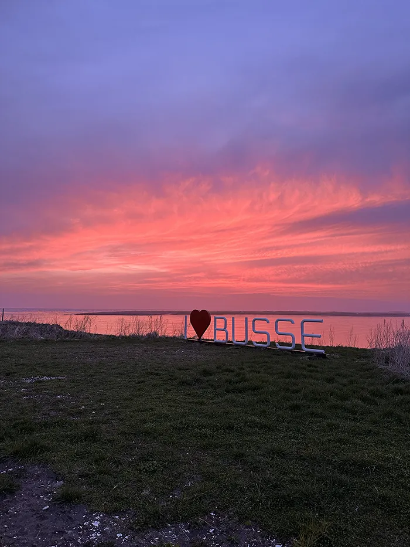
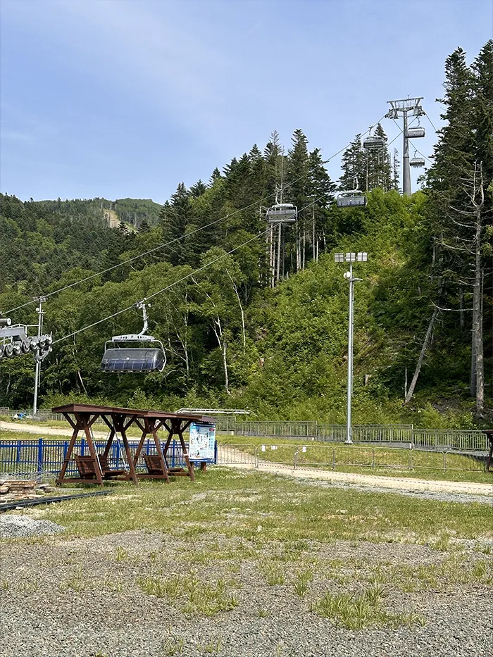
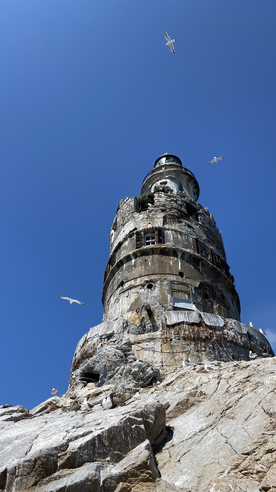

<!DOCTYPE html>
<html lang="en">
<head>
    <meta charset="UTF-8">
    <meta name="viewport" content="width=device-width, initial-scale=1.0">
    <title>Sakhalin's Hidden Gems</title>
    <link rel="stylesheet" href="styles.css">
</html>
</head>
<body>
    <!--- Hero Section -->   
    <header class="hero">
        <section class="hero_content"></section>
        <p class="hero_eyebrow">Top 3 hidden gems of</p>
        <h1 class="hero_title">SAKHALIN ISLAND</h1>
        <h2 class="hero_subtitle"> Hi, I’m Victoria!</h2>
        <p class="hero_text"> I live in Canada now but I grew up on the Sakhalin Island, a true hidden gem, filled with breathtaking nature and unforgettable memories. And since I want more people to know about this magnificent spot, I want to share my Top 3 favorite places on the island, the ones I cherish and miss the most. </p>         
        </section>
        <h2 class="hero_panel_header">In this travelogue</h2>
         <!--- Hero Panel with Links to Sections -->
        <aside class="hero_panel">
            <ul class="hero_panel_list">
                <li>
                    <a href="#lake-busse" class="hero_panel_item">
                        <span class="spot_title">Busse Lake</span>
                     <span class="spot_info">A saltwater lagoon with giant oyster beds.</span>
                    </a>
                </li>
                <li>
                    <a href="#mountain-air" class="hero_panel_item">
                        <span class="spot_title"> Mountain Air</span>
                        <span class="spot_info">A hill with breathtaking panoramic city views.</span>
                    </a>
                </li>
                <li>
                    <a href="#aniva-lighthouse" class="hero_panel_item">
                        <span class="spot_title"> Aniva Lighthouse</span>
                        <span class="spot_info">A legendary, half-ruined Japanese lighthouse.</span>
                    </a>
                </li>
            </ul>
        </aside>
    </header>
    <main>
        <section class="overview">
             <section class="about">
            <h2 id="overview-title">What is Sakhalin Island</h2>
            <p>Sakhalin Island is the largest island in Russia, yet Sakhalin is little-known island in the northwest Pacific, just above Japan. It’s wild, diverse, and deeply scenic—think misty coasts, forests, mountains, and remote lighthouses. While it isn’t as touristy as Bali or Mexico, it offers raw, unforgettable nature and authentic experiences. </p>
            <p>For me, Sakhalin is more than just a place; it’s home. It’s where I grew up, where my family is, and where some of my most cherished memories were made. From the salty air of the coast to the serene mountain trails, every corner of Sakhalin holds a special place in my heart. </p>
        </section>
        </section>
            <!--- Detailed Sections -->
        <article class="travelogue">
            <header class="travelogue-header">
                <h1> Sakhalin travelogue</h1>
                <p>So, without further ado, let me tell you more about my top 3 favorite places and why I love them as much as I do:</p>
            </header>
        <!--- Busse Lake -->
        <section id="lake-busse" class="review">
            <section class="review-image">
                <figure>
                     
                        <figcaption>Lake Busse at sunset. Image by Victoria</figcaption>
                </figure>
            </section>
            <section class="review-text">
                 <h2> Busse Lake </h2>
                 <p>Don’t let the name fool you. Lake Busse isn’t actually a lake, but a saltwater lagoon in Southern Sakhalin. What makes it so exceptional and magical? At low tide, massive oyster beds rise from the water. And those are not your Canadian oysters, but giant fresh from the ocean Pacific oysters that you can pick, shuck, and eat right on the spot.</p>
                 <p>Imagine walking across a field of oysters, each one the size of a full meal. It’s a shellfish lover’s dream, unlike anything else on Earth. </p>
                 <p>For me, it’s more than just nature’s wonder, it’s a piece of my heart. My dad built a small eco-hotel there, where every summer our family used to gather to fish, relax, and feast on oysters together. The moments I've spent there are some of my most precious memories.</p>
            </section>
        </section>
        <!--- Gorny Vozdukh -->
        <section id="mountain-air" class="review">
            <section class="review-image">
                <figure>
                     
                        <figcaption>Gorny Vozdukh funicular. Image by Victoria</figcaption>
                </figure>
            </section>
            <section class="review-text">
                 <h2> Gorny Vozdukh </h2>
                  <p>Right in the heart of Yuzhno-Sakhalinsk lies a big hill. Back when I lived on the island, it was my favorite spot to hike, bike, and breathe in the fresh mountain air. The trails lead through valleys, forests, and springs all the way up to a peak with surreal panoramic views. </p>
                  <p>In winter, the hill transforms into a ski resort called Gorny Vozdukh, or “Mountain Air.” It’s not as grand as the Alps or Rockies, but it has its own charm. The slopes are perfect for beginners and intermediate skiers, and the cozy lodges offer a warm retreat after a day on the snow. It's the perfect winter sports escape just minutes from the city. The best part? Night skiing! Under the glow of lights, you get a stunning view of the city spreading wide below. Skiing down those hills, surrounded by pristine nature, is an experience I deeply miss.</p>
            </section>
        </section>
        <!--- Aniva Lighthouse -->
        <section id="aniva-lighthouse" class="review">
            <section class="review-image">
                <figure>
                     
                        <figcaption>Aniva Lighthouse. Image by Victoria</figcaption>
                </figure>
            </section>
            <section class="review-text">
                 <h2> Aniva Lighthouse </h2>
                  <p>At the southernmost tip of Sakhalin Island stands the legendary Aniva Lighthouse. Built by the Japanese in the early 20th century, this half-ruined structure has a haunting beauty. It’s perched on a rocky outcrop, surrounded by the vast Pacific Ocean, and accessible only by boat or a long hike.</p>
                  <p>Visiting Aniva is like stepping into another world. The lighthouse itself is a testament to human resilience against nature’s forces. Inside, you can explore the old rooms, climb to the top for breathtaking views, and feel the history that lingers in the air. The journey to get there is an adventure in itself, with rugged landscapes and dramatic coastlines along the way. It’s a place that stirs the soul and ignites the imagination.</p>
            </section>
        </section>
        </article>
    </main>
    <footer>
        <p>Thanks for reading! I hope you enjoyed this little tour of my favorite places on Sakhalin Island. If you ever get the chance to visit, I promise you won’t regret it. Until then, I’ll be dreaming of those oysters, mountain air, and the lonely lighthouse.</p>
    </footer>
</body>
</html> 